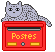

Fiche terminoulogique
 Entrée
anglaise : Egyptian Mau
Entrée
anglaise : Egyptian Mau
Domaine : chat/race
Définition anglaise : Spotted tabby cat of graceful foreign
type (d'après Robinson, Roy, Genetics for Cat Breeders, 3rd edition,
1991, p. 166).
Contexte anglais : The Egyptian Mau is a spotted tabby of graceful
foreign type. The interesting aspect of the breed is the adoption of a
spotted tabby as the "hallmark" (Robinson, Roy, Genetics for Cat Breeders,
3rd edition, 1991, p. 166).
Équivalent français : Mau égyptien, n.m.
Définition française : Chat au physique modérément
exotique, aux yeux vert pâle et à la robe mouchetée,
rappelant le chat légendaire des Égyptiens (d'après
Audras, René-Pierre et coll., Le livre des chats, 1986, p.
232).
Contexte français : C'[le Mau égyptien] est cependant
un très beau chat au physique modérément exotique,
proche de l'Abyssin. [[...]] Ce beau chat aux yeux vert pâle a une
robe mouchetée argentée, bronze ou fumée (Audras,
René-Pierre et coll., Le livre des chats, 1986, p. 232).
Observations :
-
Le bon usage, de Grevisse, ne prescrit pas l'usage de la majuscule
pour les races d'animaux en général et de chats en particulier.
De plus, les noms siamois, persan, abyssin et chartreux
s'écrivent avec une minuscule dans le Nouveau Petit Robert.
L'usage de la majuscule, que l'on rencontre parfois dans certains livres
(rarement dans les articles de périodiques), est probablement dérivé
de l'anglais, où les races de chats doivent s'écrire avec
une majuscule (par exemple, Siamese cat, d'après le Collins Cobuild
et le Webster's Collegiate Dictionary). Cependant, la présence de la majuscule dans les noms de races de chat s'est bien implantée dans la langue française et est passée dans l'usage.
-
« Mau » signifie « chat » en égyptien
(Audras, René-Pierre et coll., Le livre des chats, 1986,
p. 232).
-
D'après M. Didier Hallépée, éleveur de Maus à la chatterie de FONDCOMBE, les yeux des Maus ne sont pas vert pâle, mais vert « groseille à maquereaux »
(gooseberry green eyes).
Photo : ELENDRIL
du Nil Blanc de la chatterie de FONDCOMBE (champion international).



Nathali